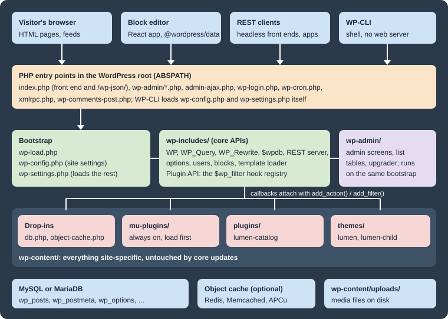

Introduction and Architecture
|
This content was generated with the assistance of AI and should be verified against the official documentation before being relied on in production. |
This page was written against WordPress 7.1.3 (released on 2026-10-06; 7.1.4, a security release of 2026-10-28, is the
version to run in production), which requires PHP 7.4 or later and recommends PHP 8.3 or later, and was checked on
2026-10-28; WordPress 7.2 is in beta and planned for 2026-12-08. The commands were
run with WP-CLI 2.12.0 on PHP 8.4 and MariaDB 11.8. The page covers what WordPress is as a product and as a code base,
and what happens inside PHP between a request reaching index.php and a template printing HTML. The vocabulary
introduced here (ABSPATH, wp-content, drop-ins, must-use plugins, hooks, the template loader) is used by every other
page, and the examples belong to Lumen Press, the fictitious publisher of the sub-section.
What WordPress is
WordPress is an open source content management system written in PHP that stores its content in a MySQL or MariaDB database. It is two things at once:
-
an application for site owners, editors and authors: a dashboard (
wp-admin), the block editor, a media library, users and roles, comments, menus and settings -
a platform for developers: a stable set of PHP APIs (posts, taxonomies, metadata, options, users, HTTP, REST) and a hook system through which themes and plugins change almost every behaviour without editing core files
The sub-section is organised around four audiences: site owners who write and publish, administrators who run the servers, theme developers who control presentation, and plugin and block developers who add features.
WordPress.org, WordPress.com and WordPress VIP
The name "WordPress" covers several different products, and statements about one are often wrong about the others:
-
WordPress (also called WordPress.org or self-hosted WordPress) is the free, open source software, downloaded from wordpress.org and installed on any host. Any theme or plugin can be installed, and the owner has full access to files, database and configuration. This is what the sub-section documents.
-
WordPress.com is a commercial hosted service run by Automattic since 2005, built on WordPress with extra plugins and modifications; what can be installed depends on the plan.
-
WordPress VIP is Automattic’s enterprise hosting platform for large WordPress sites, with its own code review, deployment and support model.
The official explanation describes WordPress as a project "owned by no one individual or company" whose development decisions are made without specific regard to WordPress.com. WordPress.com plans and prices are outside the scope of this sub-section; where a page says "WordPress" it means the self-hosted software.
The GPL and what it means for themes and plugins
WordPress is released under the GNU General Public License, version 2 or any later version ("GPLv2 or later"). The GPL gives everyone the right to run, study, modify and redistribute the software, and requires that derivative works that are distributed carry the same licence. The project’s licence page states that it considers plugins and themes to be derivative works, so they inherit the GPL, while acknowledging a "legal grey area" about what counts as a derivative work.
In practice, selling themes and plugins is allowed (customers pay for convenience, support and updates, and receive
the GPL freedoms, including redistribution, with the PHP code). Images, CSS and fonts that do not call WordPress code
are often licensed separately ("split licensing"), but the WordPress.org theme and plugin directories require
everything they host to be GPL-compatible. Running modified code on one’s own server is not distribution, so it does
not oblige anyone to publish the changes. The Lumen Press plugin shown later declares License: GPL-2.0-or-later and a
License URI in its header, as the Plugin Directory requires. This page is not legal advice.
A short history
WordPress began in 2003 as a fork of b2/cafelog, a PHP blogging tool. Its milestones explain much of the code that still exists today: why posts and pages share one table, why "the Loop" exists, why some APIs are global functions and others are classes.
| Version, date | What it introduced that still matters |
|---|---|
0.7, 2003-05-27 |
The first release under the WordPress name, forked from b2/cafelog. |
1.2 "Mingus", 2004-05-22 |
The plugin architecture: the hook system that every extension still uses. |
1.5 "Strayhorn", 2005-02-17 |
Static Pages and the theme system with template files. |
2.0 "Duke", 2005-12-31 |
A redesigned dashboard and the WYSIWYG editor; roles and capabilities. |
2.9 and 3.0 "Thelonious", 2009-12 and 2010-06-17 |
|
4.7 "Vaughan", 2016-12-06 |
The REST API content endpoints ( |
5.0 "Bebo", 2018-12-06 |
The block editor (the Gutenberg project) replaced the TinyMCE editor; the Classic Editor plugin kept the old one available. |
5.9 "Joséphine", 2022-01-25 |
Block themes, the Site Editor, |
6.0 to 6.9, 2022 to 2025-12-02 |
The block platform matured: patterns and synced patterns (6.3), Font Library, Interactivity API, Block Bindings and
plugin dependencies (6.5), |
7.0 "Armstrong", 2026-05-20 |
PHP 7.4 minimum, the refreshed admin and Command Palette, the AI Client and the Connectors screen, client-side abilities, PHP-only blocks. Real-time collaboration was removed before release and has not shipped. |
7.1 "Mary Lou", 2026-08-19 |
The always-iframed post editor, the media editor, responsive ( |
Source: WordPress.org: History
X.Y is the major release (7.0 simply follows 6.9) and the third number is a maintenance release; numbering and cadence are covered in Versions and Release Cycle.
Core directories and files
A WordPress install is a directory, called ABSPATH in the code, with three subdirectories and a handful of PHP files.
The split between them is the most important operational fact about WordPress: core updates replace wp-admin,
wp-includes and the root files, and leave wp-content alone.
| Path | Contents and rules |
|---|---|
|
The front controller for the public site and for the REST API ( |
|
The only core-level file that belongs to the site: database credentials, salts, the table prefix and constants such
as |
|
The bootstrap chain described below. |
Other root |
Further entry points: |
|
The dashboard: every admin screen, |
|
The core library: |
|
Everything that belongs to the site: |
A fresh 7.1.3 download contains three default themes (Twenty Twenty-Five, active after installation, plus
Twenty Twenty-Four and Twenty Twenty-Three), and two plugins, Akismet and Hello Dolly. Editing any core file is never
the answer: the change disappears at the next update, which may be automatic. Every customization belongs in a theme,
a plugin, a must-use plugin, a drop-in or wp-config.php.
Must-use plugins
A must-use plugin is a PHP file placed directly in wp-content/mu-plugins/ (or in the directory set by
WPMU_PLUGIN_DIR and WPMU_PLUGIN_URL). The official handbook lists their properties. They are always active, and
the only way to disable one is to remove the file. They load before regular plugins, in alphabetical order of file
name, so their hooks can affect regular plugins. Only files directly in the directory are loaded, so a plugin in a
subdirectory needs a small loader file that requires it. Activation, deactivation and uninstall hooks never run for
them, and they do not appear in update notifications: updating them is the site owner’s job.
They are the right place for site-wide policy that must not be switched off from the dashboard by mistake: update
filters, security headers, environment-specific behaviour, or the request trace used later on this page. They appear
under Plugins > Must-Use in the dashboard and in wp plugin list --status=must-use.
Drop-ins
A drop-in is a file with a reserved name placed directly in wp-content/ that replaces a piece of core behaviour.
Core looks for each name at a specific point of the bootstrap, so a drop-in runs earlier than any plugin. The list,
taken from _get_dropins() in 7.1.3, is:
| File | Purpose | When it is loaded |
|---|---|---|
|
Full-page cache served before most of WordPress loads |
Only when |
|
Persistent object cache backend (Redis, Memcached, APCu) |
Always, if present |
|
Replacement database class |
Always, if present |
|
Custom "Error establishing a database connection" page |
On a database connection error |
|
Custom maintenance page |
While a |
|
Custom installation routine |
During installation |
|
Custom page shown after a fatal error |
On a fatal error |
|
Replacement for the fatal error handler (recovery mode) |
On a fatal error |
|
Code that runs before the network and site are resolved |
Only when |
|
Messages for deleted, inactive and archived or spam sites |
When such a site is requested |
Source: Code Reference: _get_dropins()
Drop-ins are normally installed by a plugin (a caching plugin writes advanced-cache.php, a Redis plugin copies
object-cache.php), and the Plugins screen lists them under Drop-ins. The WP_CACHE constant only tells core to load
advanced-cache.php; it caches nothing by itself.
The maintenance drop-in is the simplest one to try. Lumen Press replaces the default "Briefly unavailable for scheduled
maintenance" message with its own page, which also sends a Retry-After header:
<?php
// Drop-in: shown instead of the default message while a .maintenance file exists in ABSPATH.
http_response_code( 503 );
header( 'Content-Type: text/html; charset=utf-8' );
header( 'Retry-After: 600' );
?>
<!doctype html>
<html lang="en">
<head><meta charset="utf-8"><title>Lumen Press: back soon</title></head>
<body>
<h1>Lumen Press is being updated</h1>
<p>The catalogue will be back in a few minutes.</p>
</body>
</html>Source: Code Reference: wp_maintenance()
Core creates the .maintenance file during updates, and wp maintenance-mode activate creates it on demand; with
the drop-in above, every request then gets the 503 status, the Retry-After: 600 header and this page.
The drop-in runs from wp_maintenance(), very early in wp-settings.php, before the database connection exists, so
it cannot call WordPress functions such as get_option(). A .maintenance file left behind by an interrupted update
keeps the site in maintenance mode; core ignores it after ten minutes, and deleting it ends the mode immediately.
The request lifecycle
WordPress follows PHP’s request-per-process model: every HTTP request starts from nothing, loads the configuration,
core, plugins and theme, does its work and exits. No application state survives between requests except what is stored
in the database, the object cache or files. The
Laravel introduction
explains the model in general; this section follows a WordPress front-end request for a Lumen Press book page,
/books/the-quiet-lighthouse/.
From the web server to wp-settings.php
The web server sends every request that does not match a real file to index.php (the .htaccess rules on Apache, a
try_files line on nginx; see Web Servers: Apache and nginx).
index.php only defines WP_USE_THEMES as true and requires wp-blog-header.php, which is short enough to read in
full; this is its code in 7.1.3 without the file comment and blank lines:
<?php
if ( ! isset( $wp_did_header ) ) {
$wp_did_header = true;
// Load the WordPress library.
require_once __DIR__ . '/wp-load.php';
// Set up the WordPress query.
wp();
// Load the theme template.
require_once ABSPATH . WPINC . '/template-loader.php';
}The three lines of wp-blog-header.php are the whole lifecycle: load WordPress, run the main query, load a template.
WP_USE_THEMES is what makes the template loader pick a theme template; a script that loads WordPress without it gets
the API but no theme output.
wp-load.php defines ABSPATH as its own directory, sets a conservative error_reporting() level and looks for
wp-config.php, first in ABSPATH and then one directory up, as long as that directory is not another WordPress
install. If there is no configuration file at all, it redirects to wp-admin/setup-config.php, the first screen of the
installer. wp-config.php defines the database constants, salts, $table_prefix and any other constants, and ends by
requiring wp-settings.php. The last lines must stay as they are:
<?php
// ...database settings, salts, $table_prefix and other constants above...
/* That's all, stop editing! Happy publishing. */
/** Absolute path to the WordPress directory. */
if ( ! defined( 'ABSPATH' ) ) {
define( 'ABSPATH', __DIR__ . '/' );
}
/** Sets up WordPress vars and included files. */
require_once ABSPATH . 'wp-settings.php';Constants must be defined above the require_once line: anything defined after it is too late, because
wp-settings.php has already applied its defaults. When wp-config.php is moved one level up, ABSPATH must not be
changed; wp-load.php finds the file without help. One older book suggests changing ABSPATH in that situation, which
breaks the site. Every constant is described in wp-config.php Reference.
Inside wp-settings.php
wp-settings.php is the real bootstrap. In 7.1.3 it runs these steps in this order; the order explains when a plugin
or a theme can use which API.
-
Loads
version.php,load.phpand the compatibility files, and checks the PHP version and extensions (wp_check_php_mysql_versions()). -
Defines the initial constants (
wp_initial_constants():WP_CONTENT_DIR,WP_DEBUG,WP_CACHE, memory limits and so on) and registers the fatal error handler (wp_register_fatal_error_handler(), added in 5.2 for recovery mode). -
Calls
wp_maintenance(), which stops here with the maintenance page if a recent.maintenancefile exists. -
Calls
wp_debug_mode()to applyWP_DEBUG,WP_DEBUG_LOGandWP_DEBUG_DISPLAY. -
Includes
advanced-cache.phpifWP_CACHEistrueand the file exists. A page cache can serve a stored page from here and exit, before the database is even contacted. -
Loads the core library files, then
require_wp_db()creates the global$wpdb(or loads thedb.phpdrop-in) andwp_start_object_cache()loadsobject-cache.phpor the default non-persistent cache. -
Loads
default-filters.php, the file where core attaches its own callbacks to its own hooks. On Multisite it then resolves the network and the site (ms-settings.php, which runssunrise.php). -
Stops here if
SHORTINITistrue. Scripts that only need$wpdband the basic functions define it before loadingwp-load.php. -
Loads the rest of the core library: users, posts, taxonomies, rewrite, REST, blocks, script loader and more.
-
Loads every must-use plugin (firing
mu_plugin_loadedfor each), then network-activated plugins on Multisite, and firesmuplugins_loaded. -
Defines the cookie and SSL constants, registers the default post types and taxonomies, and initialises recovery mode.
-
Loads each active plugin from the
active_pluginsoption (firingplugin_loadedfor each), thenpluggable.php(functions such aswp_mail()orwp_hash_password()that a plugin may have already defined to replace them), and firesplugins_loaded. -
Creates the main globals:
$wp_the_queryand$wp_query(WP_Query),$wp_rewrite,$wp(WP),$wp_widget_factoryand$wp_roles, then firessetup_theme. -
Loads the default translations and the locale, then includes the active theme’s
functions.php: the child theme’s first, then the parent’s. Firesafter_setup_theme. -
Sets up the current user (
$wp->init()in the code) and firesinit, the hook where post types, taxonomies, blocks and shortcodes are registered. -
On Multisite, checks whether the site is archived, deleted or suspended. Fires
wp_loaded: WordPress, every plugin and the theme are now fully loaded.
Source: Code Reference: wp-settings.php
Consequences follow directly from that order. A regular plugin cannot hook muplugins_loaded, which has already
fired when the plugin file is included, and a theme’s first useful hook in functions.php is after_setup_theme.
is_user_logged_in() and current_user_can() answer reliably only from init onwards. Since 6.7, calling a
translation function such as __() before init triggers a "translation loading triggered too early" notice.
wp() and the main query
Back in wp-blog-header.php, wp() calls $wp->main(), the method that turns a URL into a database query:
-
parse_request()matches the request path against the rewrite rules stored in therewrite_rulesoption and turns the match into query variables (lp_book=the-quiet-lighthousefor the book page, to which it addspost_typeandname). Therequestfilter can change them, and theparse_requestaction fires at the end. REST API requests are handled here: core hooksrest_api_loaded()toparse_request, and it serves the JSON response and exits, so a REST request never reaches the template loader. -
query_posts()runs the main query with those variables ($wp_the_query->query()). This is the query that the Loop and the conditional tags (is_single(),is_archive(),is_404()) describe. -
handle_404()sets the 404 status when nothing matched. -
register_globals()exposes$post,$postsand the query variables as globals. -
send_headers()sends the HTTP headers (filterwp_headers, actionsend_headers). -
The
wpaction fires: the query is known, the headers are sent and no body has been printed yet.
Source: Code Reference: WP::main()
template-loader.php
wp-includes/template-loader.php decides which file renders the response:
-
It fires
template_redirect, the last hook before output. Redirects, access checks and custom non-HTML responses belong here. -
A
HEADrequest exits here (filterexit_on_http_head), androbots.txt, the favicon, feeds and trackbacks are handled without a theme template. -
It walks the conditional tags in a fixed order (
is_embed,is_404,is_search,is_front_page,is_home,is_privacy_policy,is_post_type_archive,is_tax,is_attachment,is_single,is_page,is_singular,is_category,is_tag,is_author,is_date,is_archive) and, for each one that is true, asks the matchingget_*_template()function for a file following the template hierarchy, stopping at the first file found. If none is found, it usesindex.php. -
It applies the
template_includefilter, fireswp_before_include_templateand includes the file.
For a classic theme the included file is a PHP template from the theme, such as single-lp_book.php. For a block theme
the hierarchy is resolved against the theme’s HTML templates (and the user’s edited copies stored in the database), and
the file actually included is core’s wp-includes/template-canvas.php, which renders the chosen block template. The
order in which candidate templates are tried is the subject of
Template Hierarchy. When the template finishes, PHP runs the shutdown
action and the process ends.
Other entry points
All entry points load the same bootstrap, so plugins and the theme’s functions.php are loaded on every one of them.
| Entry point | What differs from a front-end request |
|---|---|
|
|
|
Goes through |
|
Defines |
|
Defines |
|
Login, logout and password reset (application passwords never work here); the legacy XML-RPC API, best disabled. |
WP-CLI |
Loads |
The last row can be checked with wp eval and did_action(): in a WP-CLI process init and wp_loaded report 1,
while parse_request, wp and template_redirect report 0.
Tracing a real request
The order above can be observed on a running site with a must-use plugin that records the time at which each hook
fires and writes the result to the debug log at shutdown. It is a development tool, so it does nothing unless the
environment type is local.
<?php
/**
* Plugin Name: Lumen Request Trace
* Description: Logs the order of the main bootstrap hooks for one request (local environments only).
* Version: 1.0.0
* Author: Lumen Press
* License: GPL-2.0-or-later
*/
defined( 'ABSPATH' ) || exit;
if ( 'local' !== wp_get_environment_type() ) {
return;
}
$lumen_trace_hooks = array(
'muplugins_loaded', 'plugins_loaded', 'setup_theme', 'after_setup_theme', 'init', 'wp_loaded',
'parse_request', 'send_headers', 'wp', 'template_redirect', 'wp_before_include_template',
'wp_head', 'wp_footer', 'shutdown',
);
$GLOBALS['lumen_trace'] = array();
foreach ( $lumen_trace_hooks as $lumen_hook ) {
add_action(
$lumen_hook,
static function () use ( $lumen_hook ) {
$GLOBALS['lumen_trace'][ $lumen_hook ] = microtime( true );
},
PHP_INT_MIN
);
}
add_filter(
'template_include',
static function ( $template ) {
$GLOBALS['lumen_trace'][ 'template_include: ' . basename( (string) $template ) ] = microtime( true );
return $template;
},
PHP_INT_MAX
);
add_action(
'shutdown',
static function () {
$start = (float) $_SERVER['REQUEST_TIME_FLOAT'];
$lines = array();
foreach ( $GLOBALS['lumen_trace'] as $step => $time ) {
$lines[] = sprintf( '%7.1f ms %s', ( $time - $start ) * 1000, $step );
}
$uri = isset( $_SERVER['REQUEST_URI'] ) ? sanitize_text_field( wp_unslash( $_SERVER['REQUEST_URI'] ) ) : '(cli)';
error_log( 'Lumen trace for ' . $uri . PHP_EOL . implode( PHP_EOL, $lines ) );
},
PHP_INT_MAX
);The plugin registers its callbacks with priority PHP_INT_MIN, so they run before any other callback on the same
hook, and the template_include filter with PHP_INT_MAX, so it sees the template that every other filter agreed on.
With WP_ENVIRONMENT_TYPE set to local and WP_DEBUG_LOG set to true, a second (warm) request for a book page
writes this to wp-content/debug.log. The theme is Twenty Twenty-Five, a block theme, which is why the included file is
template-canvas.php:
[28-Oct-2026 10:05:18 UTC] Lumen trace for /books/the-quiet-lighthouse/
70.8 ms muplugins_loaded
73.2 ms plugins_loaded
76.6 ms setup_theme
79.1 ms after_setup_theme
79.6 ms init
104.4 ms wp_loaded
104.7 ms parse_request
105.8 ms send_headers
105.8 ms wp
106.1 ms template_redirect
138.0 ms template_include: template-canvas.php
138.2 ms wp_before_include_template
178.5 ms wp_head
199.4 ms wp_footer
201.6 ms shutdownThe absolute times come from PHP’s built-in development server and mean little; the order is the point. Keep such a file out of deployments: the debug log can be publicly readable at its default location.
The hook system as the extension model
Hooks are the reason WordPress can be customised without editing core. Core, and any plugin, calls do_action() or
apply_filters() at named points; any code can register a callback for those names with add_action() or
add_filter(). There are two kinds:
-
Actions run code at a point of the lifecycle: register a post type on
init, add a header onsend_headers, enqueue a stylesheet onwp_enqueue_scripts. Their return value is ignored. -
Filters receive a value, may change it and must return it: the post title (
the_title), the content (the_content), the chosen template (template_include). The Plugin Handbook adds that filters should work in isolation and never have side effects such as printing output or changing globals.
Every callback has a priority (default 10; lower runs first) and declares how many arguments it accepts. All
registrations live in one global registry, $wp_filter, keyed by hook name, so plugins and themes cooperate without
knowing each other.
The first version of the Lumen Press plugin uses one hook of each kind: an action registers the lp_book post type on
init, and a filter marks scheduled books as forthcoming wherever their title is printed.
<?php
/**
* Plugin Name: Lumen Catalog
* Description: Book catalogue for Lumen Press.
* Version: 0.1.0
* Requires at least: 6.9
* Requires PHP: 7.4
* Author: Lumen Press
* License: GPL-2.0-or-later
* License URI: https://www.gnu.org/licenses/gpl-2.0.html
* Text Domain: lumen-catalog
*/
defined( 'ABSPATH' ) || exit;
// Action: run code at a point of the lifecycle.
add_action( 'init', 'lumen_catalog_register_book_type' );
function lumen_catalog_register_book_type() {
register_post_type(
'lp_book',
array(
'label' => __( 'Books', 'lumen-catalog' ),
'public' => true,
'has_archive' => true,
'rewrite' => array( 'slug' => 'books' ),
'show_in_rest' => true, // Block editor and /wp/v2/lp_book.
'supports' => array( 'title', 'editor', 'excerpt', 'thumbnail', 'custom-fields' ),
)
);
}
// Filter: receive a value, return it (changed or not).
add_filter( 'the_title', 'lumen_catalog_mark_forthcoming', 10, 2 );
function lumen_catalog_mark_forthcoming( $title, $post_id = 0 ) {
if ( 'lp_book' === get_post_type( $post_id ) && 'future' === get_post_status( $post_id ) ) {
/* translators: %s: book title. */
$title = sprintf( __( '%s (forthcoming)', 'lumen-catalog' ), $title );
}
return $title;
}Source: Plugin Handbook: Hooks
Activate it, flush the permalinks once and create two books, one published and one scheduled:
wp plugin activate lumen-catalog
wp rewrite structure '/%postname%/'
wp post create --post_type=lp_book --post_title="The Quiet Lighthouse" --post_status=publish --porcelain
wp post create --post_type=lp_book --post_title="Winter Orchard" --post_status=future --post_date="2027-03-01 09:00:00" --porcelain
wp eval 'foreach ( get_posts( array( "post_type" => "lp_book", "post_status" => "any" ) ) as $p ) { echo get_the_title( $p ), PHP_EOL; }'Source: WP-CLI Commands: wp post create
Plugin 'lumen-catalog' activated.
Success: Activated 1 of 1 plugins.
Success: Rewrite structure set.
Success: Rewrite rules flushed.
4
5
Winter Orchard (forthcoming)
The Quiet LighthouseThe flags in register_post_type() matter beyond this page: 'show_in_rest' set to true is what gives the post type
a REST endpoint and the block editor. One older book registers a custom post type without it, which leaves the type on
the classic editor and invisible to the REST API. The full treatment of hooks (priorities, removing callbacks, dynamic
hook names, creating hooks in a plugin) is in Hooks: Actions and Filters,
and custom post types are covered in
Custom Post Types and Taxonomies.
The block editor: a React application over the REST API
Since 5.0 the post editor, and since 5.9 the Site Editor, are JavaScript applications that run in the browser. They
are built from the @wordpress/* npm packages developed in the Gutenberg repository and bundled with core: React
components (@wordpress/components), data stores (@wordpress/data, with core/block-editor for the editor state and
core from @wordpress/core-data for posts, users and settings), and @wordpress/api-fetch for HTTP calls. The PHP
side renders an almost empty admin page and the scripts; everything the editor reads or saves (the post, its revisions,
the media library, the templates of a block theme, the global styles) goes through the REST API. The REST API Handbook
calls the API "the foundation of the WordPress Block Editor".
Content is stored as HTML in post_content, with block names and attributes kept in HTML comments
(<!-- wp:paragraph --> … <!-- /wp:paragraph -->), so the content still renders without the editor.
Because the editor talks to the REST API, a custom post type without show_in_rest cannot use it, and a field that a
plugin does not expose in REST is invisible to it. The same endpoints serve anyone else within the requesting user’s
permissions: on the Lumen Press site, an anonymous GET /wp-json/wp/v2/lp_book lists the published books, while the
?context=edit form that the editor uses answers 401 with the code rest_forbidden_context. In the editor each
request carries the login cookie plus a wp_rest nonce; a cookie-authenticated request without the nonce is treated
as anonymous. Since 7.1 the post editor always runs inside an iframe, so block code that touches the admin page’s
window.document or depends on global admin CSS breaks, and front-end interactivity on server-rendered pages uses the
Interactivity API rather than React. These topics continue in REST API: Using It,
Block Development Environment and
Interactivity API.

Running the examples
The examples on this page need a running site. This Compose file uses the official images, pinned to WordPress 7.1.3,
WP-CLI 2.12.0 and MariaDB 11.8, and mounts the Lumen Press must-use plugin, plugin and drop-in from the project
directory. Database passwords come from an .env file next to it; the values shown are placeholders.
x-wp-env: &wp-env
WORDPRESS_DB_HOST: db
WORDPRESS_DB_USER: wordpress
WORDPRESS_DB_PASSWORD: ${DB_PASSWORD}
WORDPRESS_DB_NAME: wordpress
x-wp-volumes: &wp-volumes
- wp:/var/www/html
- ./mu-plugins:/var/www/html/wp-content/mu-plugins
- ./lumen-catalog:/var/www/html/wp-content/plugins/lumen-catalog
- ./maintenance.php:/var/www/html/wp-content/maintenance.php
services:
db:
image: mariadb:11.8
environment:
MARIADB_DATABASE: wordpress
MARIADB_USER: wordpress
MARIADB_PASSWORD: ${DB_PASSWORD}
MARIADB_ROOT_PASSWORD: ${DB_ROOT_PASSWORD}
volumes: [db:/var/lib/mysql]
wordpress:
image: wordpress:7.1.3-php8.4-apache
depends_on: [db]
ports: ["8080:80"]
environment:
<<: *wp-env
WORDPRESS_DEBUG: "1"
WORDPRESS_CONFIG_EXTRA: |
define( 'WP_ENVIRONMENT_TYPE', 'local' );
define( 'WP_DEBUG_LOG', true );
define( 'WP_DEBUG_DISPLAY', false );
volumes: *wp-volumes
cli:
image: wordpress:cli-2.12.0-php8.4
profiles: [cli]
user: "33:33"
depends_on: [db, wordpress]
environment: *wp-env
volumes: *wp-volumes
volumes:
db:
wp:printf 'DB_PASSWORD=<your-db-password>\nDB_ROOT_PASSWORD=<your-root-password>\n' > .env
docker compose up -d
docker compose run --rm cli wp core install --url=http://localhost:8080 --title="Lumen Press" \
--admin_user=admin --admin_email=admin@lumenpress.test --prompt=admin_password
docker compose run --rm cli wp plugin activate lumen-catalog
docker compose run --rm cli wp plugin list --fields=name,statusSource: WP-CLI Commands: wp core install
name status
akismet inactive
hello inactive
lumen-catalog active
lumen-request-trace must-use
maintenance.php dropinThe list shows the three kinds of extension side by side: regular plugins, a must-use plugin and a drop-in.
docker compose down -v removes the containers and volumes. Local environments are compared in
Local Development Environments.
Where older books and tutorials are outdated
The architecture has changed less than the features, but several statements in older books no longer match core:
| Older claim | Current behaviour |
|---|---|
WordPress has built-in caching and CSS/JavaScript minification. |
Core has no page cache and does not concatenate or minify front-end assets. The |
Core includes two-factor authentication. |
It does not. Core has passwords (hashed with bcrypt since 6.8), a strength meter and application passwords for the APIs. Two-factor login needs a plugin such as the canonical Two Factor plugin, single sign-on, or passkeys through a plugin. See Security Hardening. |
Version X.Y.Z means major.minor.patch. |
X.Y is the major release and Z is the maintenance release; 6.9 to 7.0 is an ordinary major step. |
Full site editing arrived in 5.4 to 5.6. |
Block themes and the Site Editor shipped in 5.9 (January 2022); earlier versions only had experiments in the Gutenberg plugin. |
Change |
|
All corrections collected across the sub-section are listed in Where Older Books and Tutorials Are Outdated.
Common pitfalls
-
Editing core files. Changes in
wp-admin,wp-includesor the root PHP files are lost at the next update, and automatic minor updates make that happen without warning. Use a plugin, a must-use plugin or a drop-in. -
Registering things on the wrong hook. Post types, taxonomies, blocks and shortcodes are registered on
init, REST routes onrest_api_init, theme features onafter_setup_theme. Registering earlier fails because the APIs or the current user are not ready; registering onwpor later is too late for the main query. -
Doing heavy work in
functions.phpor the plugin file body. That code runs on every request, including REST, AJAX, cron and WP-CLI. Attach it to a hook and check what kind of request is running (wp_doing_ajax(),wp_doing_cron(),wp_is_serving_rest_request()). -
Leaving a development drop-in or must-use plugin in production. A forgotten
object-cache.phppointing to a missing Redis server, or a tracing plugin, affects every request; checkwp plugin list --status=dropinand--status=must-useduring deployments.